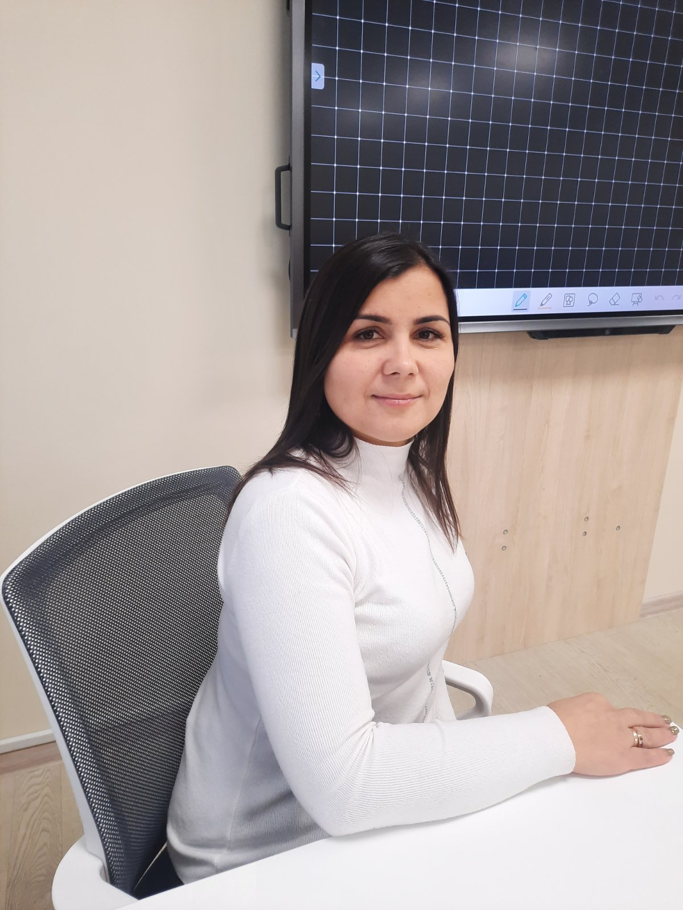
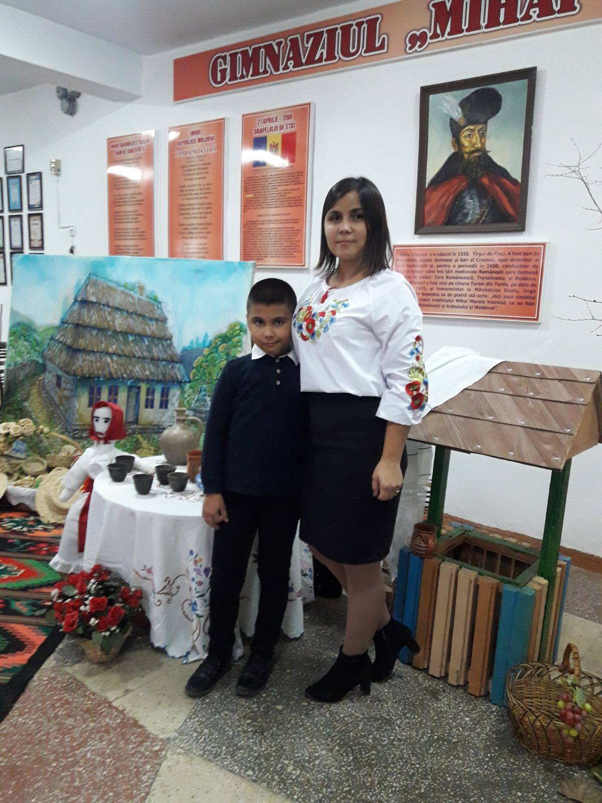
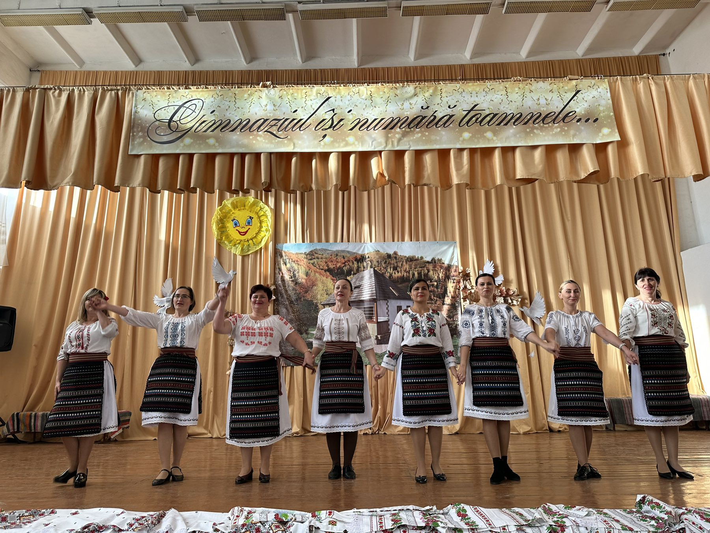
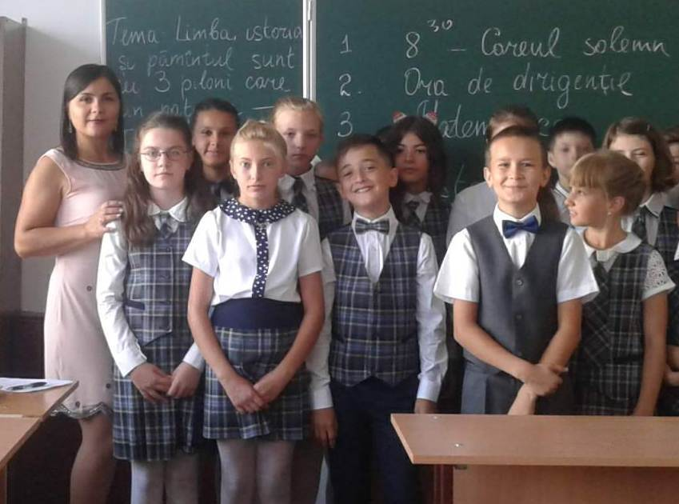

Timofte Ana
|
Profesoară de matematică & informatică
Româna, Rusa. Engleza ancik4@gmail.com +373******** |
Sunt profesoară de matematică și informatică la IP Gimnaziul „Mihai Viteazul” din orașul Strășeni. Am studii de licență "Matematică Aplicată". Studii masterat am la specialitatea "Matematica didactică" și “Modelarea proceselor economico-financiare” |
|  |  |  |  |
Experiența de lucru
Profesoară de matematică & informatică
ianuarie 2009 - august 2017IPLTPA "N. Sulac", or. Chișinău
Profesoară de matematică & informatică
august 2017 - prezentIP "Mihai Viteazul" or.Strășeni
Educație
Studii de licență
septembrie 2004 - iunie 2008Absolventă a Universităţii de Stat din Moldova, Facultatea de Matematică şi Informatică, cu titlu de Licenţiat în Știinţe exacte, specialitatea Matematică Aplicată
Studii de masterat
septembrie 2008 - iunie 2010Absolventă a Universităţii de Stat din Moldova, Facultatea de Matematică şi Informatică, cu titlu de Master în Știinţe exacte, specializarea “Modelarea proceselor economico-financiare”
Studii de masterat
septembrie 2016 - iunie 2018Absolventă a Universității de Stat „Ion Creangă” din Chișinău, cu titlu de Master în Științe ale educației, programul de studii Matematica didactică